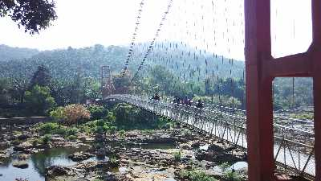

Sprawling, residential Ernakulam is known for Marine Drive, a busy waterfront promenade
where boats offer backwater cruises. The Kerala Folklore and Hill Palace museums explore local
heritage through art and antiquities. Shops along Broadway and on MG Road sell fabrics, crafts,
and spices, while modern Lulu Mall also has a cinema and an ice rink.
Ezhattumugham

11.8km away from the Cochin International Airport is the small but magnificent village of Ezhattumugham. It is known for its Thumboormozhi dam and oil palm plantation. This village in Ernakulam, Kerala has been promoted as a tourism vilage known as Prakriti Gramam
St George's Church Kadamattom
St George’s Church is an ancient Indian Orthodox Church in Kadamattom, Ernakulam, Kerala near Kolenchery. It is believed that it was constructed by Bishop Mar Sabor, who helped bring God’s word as per the Saint Thomas Christians to Kerala.
Paniyeli poru
Located on the Periyar River, Paniyeli Poru is a spot in Ernakulam that has been a tourist attraction for years. The natural bottleneck formed by River Periyar has led to an interesting and wild convergence of waters over a rocky terrain.